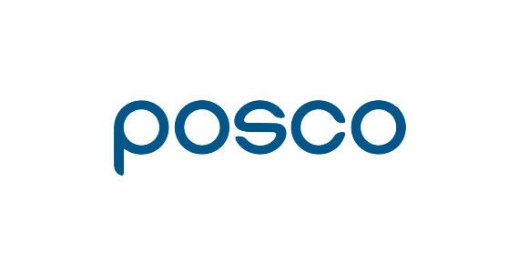

건축
포스코 건설은 세계 각지에서 도로, 경전철, 항만 등 SOC사업과 신도시 개발, 초고층 빌딩 등 건설의 모든 분야를 수행하며 그 역량을 인정 받고 있습니다.
4차 산업혁명 시대를 맞아 Smart Construction을 통해 더 나은 건설의 미래를 실현하겠습니다.

주거시설
국내 건설업계 최고 신용등급과 건실한 재무구조로 고객의 신뢰를 쌓아온 포스코건설은 삶의 가치를 높이는 주거공간을 제공함으로써 고객에게 보답하고 있습니다.
주거브랜드 the#은 사는 곳에 대한 자부심을 높이고 인간중심의 설계로 차원 높은 생활공간을 제공하겠다는 포스코건설의 장인정신을 함축하고 있습니다.

일산 더샵 그라비스타

송도 더샵 센트럴파크
포스코건설은 새로운 주거시설 건설뿐만 아니라 기존의 주거환경과 기반시설을 재정비하여 공간의 부가가치를 창출해내는 재개발, 재건축 분야와 도시재생사업에도 참여하고 있습니다.
주요실적
| 부산 연산 더샵 | 지하4층 ~ 30층, 11개동, 1,071세대 [연면적 52,413m2] |
|---|---|
| 전주 에코시티 3차 | 지하2층 ~ 29층, 9개동, 644세대 [연면적 109,041m2] |
| 송도 더샵 센트럴시티 | 지하2층 ~ 47층, 18개동, 2,848세대 [연면적 395,418m2] |
| 송도 더샵 퍼스트파크 | 지하2층 ~ 44층, 15개동, 2,597세대 [연면적 441,457m2] |
| 동탄 메타폴리스 | 지하5층 ~ 66층, 4개동, 1,266세대 [연면적 462,813m2] |
| 청라 더샵 레이크파크 | 지하1층 ~ 48층~58층, 4개동, 766세대 [연면적 154,771m2] |
| 송도 더샵 센트럴파크1 | 지하2층 ~ 47층, 3개동, 729세대 [연면적 204,912m2] |
| 송도 더샵 센트럴시티2 | 지하2층 ~ 48층, 3개동, 632세대 [연면적 184,837m2] |
| 서면 더샵 센트럴스타 | 지하5층 ~ 47~58층, 5개동 주상복합 [연면적 433,834m2] 아파트 1,360세대, 오피스텔 319실, 판매시설 22,856m2 |
| 부산 더샵 센텀스타 | 지하5층 ~ 51~60층, 3개동 [연면적 205,993m2] 아파트 629세대, 오피스텔 219실, 판매시설 1,274m2 |
| 더샵 스타시티 | 지하3층 ~ 35~58층, 4개동 [연면적 417,681m2] 아파트 1,177세대, 오피스텔 133실 |

해운대 엘시티 더샵
상업 시설
포스코건설은 차별화된 설계를 바탕으로 최첨단 인테리전트 빌딩에 전문성을 확보하고 있습니다. 초고층 업무시설은 물론 교육, 의료, 연구, 상업시설 및 스포츠시설 등 다양한 분야에서 경험을 쌓여왔습니다.
특히 무량판 구조시스템, 풍진동 저감기술, 에너지 절감 기술 등 최신 기술을 적용함으로써 외관뿐만 아니라 안전성과 환경을 고려하는 건축물을 창조해내고 있습니다.

중국 북경 포스코센터
주요실적
| 여의도파키원 | 지하7층 ~ 69층, 3개동, 오피스, 쇼핑몰, 호텔 등 [연면적 629,396m2] |
|---|---|
| 해운대 엘시티 더샵 | 지하5층 ~ 85층, 2개동, 101층 1개동 공동주택 882세대, 레지던스 561실, 호텔 260실 [연면적 661,135m2] |
| 송도 컨벤시아 2단계 | 지하1층 ~ 4층, 전시관 및 헤드하우스 [연면적 64,071m2] |
| 아트센터 인천 | 지하2층 ~ 7층,콘서트홀, 상업시설 등 [연면적 441,457m2] |
| 을지로 하나은행 본점 | 지하6층 ~ 26층, [연면적 54,038m2] |
| 미얀마 대우 아마라 호텔 | 지상 29층, 호텔 346실, 레지던스 호텔 315실 [연면적 104,123m2] |
| 중국 북경 포스코센터 | 지하4층 ~ 33층, 2개동 [연면적 162,811m2] |
| NEATT(동북아 트레이드 타워) | 지하3층 ~ 65층 [연면적 238,435m2] |
| 행정도시 정부청사 1단계 2구역 | 지하1층 ~ 7층, 8개동 [연면적 215,250m2] |
| 양재동 업무시설 | 지하6층 ~ 20층 [연면적 44,065m2] |
| 포스코건설 송도사옥 | 지하5층 ~ 40층, 2개동 [연면적 149,771m2] |
| 송도 트라이블 | 3층,문화시설(공연, 교육, 전시 등) [연면적 2,720m2] |
| 송도 컨벤시아 1단계 | 지하 1층 ~ 4층, [연면적 55,958m2] |
| 송도 커낼워크 | 지하 1층 ~ 4층,문화 및 집회시설 등 [연면적 52,480m2] |

송도 국제업무단지
도시개발
포스코건설은 대형 PF사업과 신도시 건설로 도시개발의 선두주자로 꼽히고 있습니다.
동북아시아의 새로운 관문이자 경제허브로 발돋움할 송도국제업무단지를 건설하고 있으며 충주의 기업혁신도시, 대구의 첫 신도시인 이시아폴리스, 초고층 복합단지로 개발되는 동탄 메타폴리스 등 복합적 기능이 가능한 환경친화적 도시개발로 고부가가치를 창출하고 있습니다.
포스코 건설은 베트남의 첫 자립형 신도시 스플랜도라(Splendora)
개발을 시작으로 해외 도시개발로 무대를 넓혀갈 것입니다.

베트남 하노이 광역도시 마스터플랜 설계
주요실적
| 송도 국제업무단지 | 컨벤션센터, 동북아무역타워, 국제학교, 공원, 주거 · 상업 · 업무시설, 쇼핑몰, 문화센터 등 [연면적 5,345,000m2] |
|---|---|
| 대구 이시아폴리스 | 지하3층 ~ 지상22층, 총 49개동, 3,862세대 이시아폴리스 더샵 1,2,3,4차 및 부지조성 사업 [연면적 117,000m2] |
| 베트남 북앙카인 신도시 개발사업 1단계 | 지하5층 ~ 85층 2개동, 101층 1개동, 주거 1,049세대, 상업시설, 오피스, 교육시설 등 [연면적 260,000m2] |
| 베트남 하노이 광역도시 마스터플랜 설계 | 하노이시 면적의 3배 이상 확대하는 계획으로 신도시, 도로, 상하수도, 전력, 하천정비 등 초대형 수도 기본계획을 설계 [연면적 334,460,000m2] |